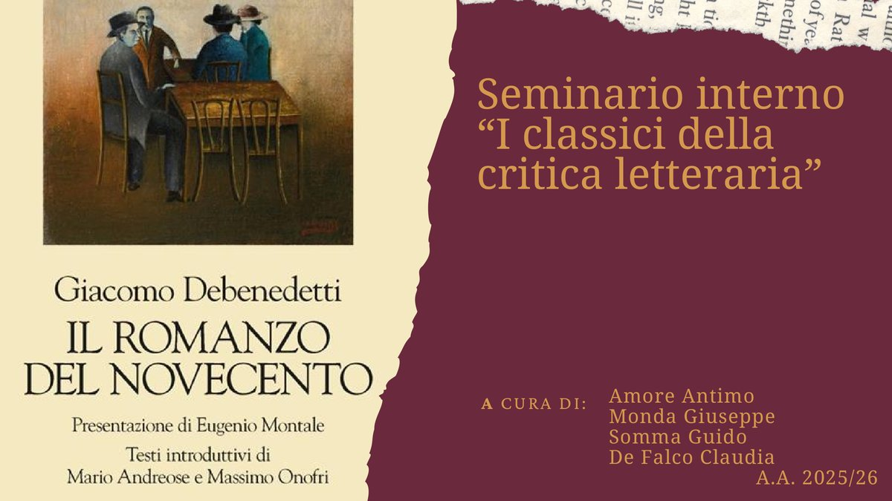

Filologia moderna · Critica letteraria · Napoli
Leggere con metodo,
raccontare con passione.
Sono Claudia De Falco, laureata triennale in Lettere Moderne e laureanda magistrale in Filologia Moderna all’Università di Napoli Federico II (esami completati, media 29,6/30). Qui raccolgo saggi critici, percorsi di catalogazione codicologica e ricerche universitarie: dalla filologia dei manoscritti danteschi alle teorie del romanzo nel Novecento, fino alle dinamiche della ricezione letteraria.
Scritti e progetti
03
Saggio · Letterature comparate
Psicofagia. Immersioni letterarie nel narrare la guerra
Dall’estetica della ricezione di Jauss al reportage di Oriana Fallaci, fino a «Le Benevole» di Jonathan Littell: come la letteratura racconta la guerra e cosa chiede a chi legge.
Leggi l’articoloFilologia italiana · Codicologia · Manus Online
Descrizione esterna e interna: CNMD\0000329507 (Urb.Lat.378)
Scheda di catalogo scientifica del manoscritto trecentesco della Commedia di Dante (Città del Vaticano, Biblioteca Apostolica Vaticana, Urb.Lat.378): composizione materiale, datazione, paleografia, bottega di Pacino di Bonaguida e descrizioni interne delle cantiche.
Leggi la scheda di catalogo
Storia della critica letteraria · Seminario
Il romanzo che interroga. Giacomo Debenedetti e la crisi del personaggio nel Novecento
Dai Vociani a Tozzi, Pirandello, Joyce, Proust e Svevo: come la critica di Debenedetti intreccia psicanalisi e teoria della probabilità per raccontare la frattura dell’uomo moderno e la metamorfosi del romanzo.
Leggi l’articoloChi sono
Laurea triennale in Lettere Moderne (100/110) e laureanda magistrale in Filologia Moderna all’Università degli Studi di Napoli Federico II, con tutti gli esami sostenuti (media 29,63/30) e una tesi in Storia della critica letteraria con la prof.ssa Elisabetta Abignente.
Il mio percorso unisce il rigore filologico e codicologico sui testi antichi (analisi paleografica e catalogazione su piattaforma Manus Online) all’approfondimento critico del romanzo moderno e contemporaneo. Curiosa, comunicativa ed energica, affianco alla ricerca accademica una passione costante per il panorama editoriale, la progettazione culturale e la scoperta del libro giusto per ogni lettore.
Contatti
defalcoclaudia11@gmail.com